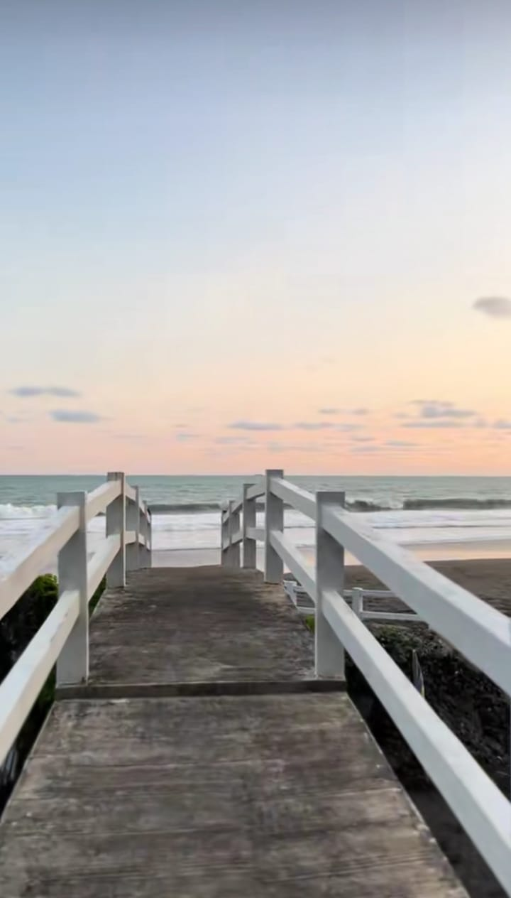
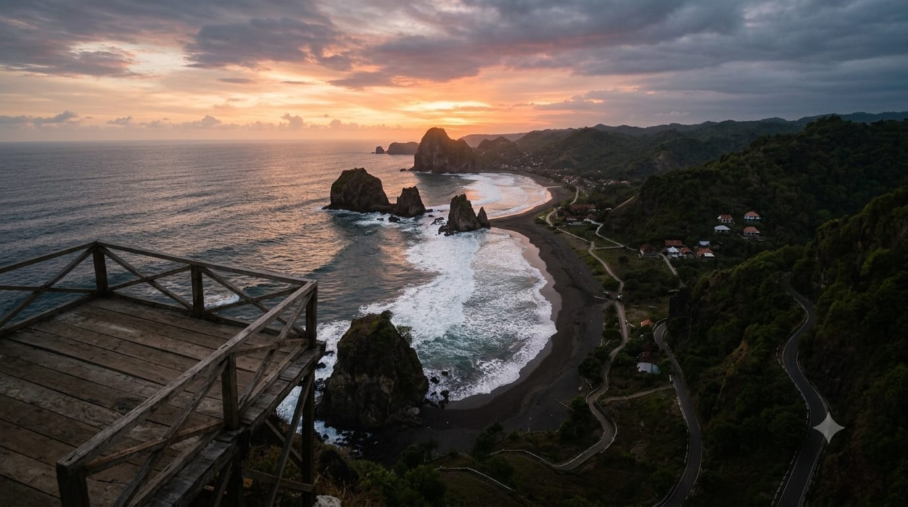
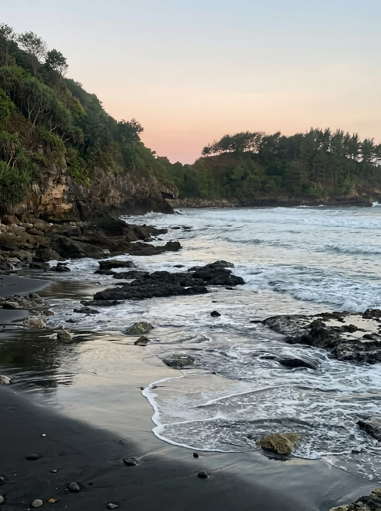

DESTINASI PESISIR KEBUMEN · JAWA TENGAH
SURUMANIS
Pantai di balik bukit. Laut terbuka di hadapan.
Di Desa Pasir, Kecamatan Ayah, garis pantai, tebing, dan perbukitan bertemu dalam satu lanskap pesisir. Dari atas bukit, laut terbentang luas; dari pesisir, bentuk tebing dan karang terasa lebih dekat.
TENTANG SURUMANIS
Pantai di balik bukit.
Surumanis mempertemukan bukit dan pesisir dalam satu ruang pandang. Dari atas, laut terbentang luas; dari bawah, tebing, karang, dan pasir terasa lebih dekat.
Yang membuat tempat ini khas bukan satu titik foto, melainkan hubungan antara bukit dan laut. Satu perjalanan dapat berpindah dari panorama lepas ke jalur pesisir tanpa kehilangan karakter alaminya.
CEK HARI-H
Jam kunjungan
DESA PASIR
Kecamatan Ayah

forest
Jalan setapak alami di bawah naungan pandan laut menuju deburan ombak karang.
DESA PASIR, AYAH
TiketRp 10.000/ orang
ParkirRp 3.000–5.000motor / mobil
Jam kunjunganCEK HARI-HWIB
LokasiDesa PasirAyah, Kebumen
YANG MEMBUAT SURUMANIS MENARIK
Satu bentang, empat karakter
Yang membuat lanskapnya berbeda
01 • Garis Pantai
water
Garis Pantai
Area pesisir dengan batu, pasir, dan ombak laut selatan yang menjadi latar utama saat pengunjung berjalan atau mengambil foto.
Bebatuan Karang & Buih Samudra
02 • Perbukitan
landscape
Perbukitan
Kontur bukit membuat beberapa titik pandang Surumanis terasa lebih terbuka ke arah laut.
Elevasi Hijau Pesisir
03 • Tebing Megah
terrain
Tebing
Tebing menjadi salah satu elemen visual yang paling menonjol dan membuat lanskap Surumanis mudah dikenali.
Benteng Alami Samudra
04 • Cakrawala Laut
waves
Laut Selatan
Pemandangan laut selatan yang luas menjadi daya tarik utama, terutama saat cuaca cerah dan cahaya sore mulai hangat.
Samudera Hindia Terbuka
AKTIVITAS & PENGALAMAN
Cara Menikmati Surumanis
Surumanis paling menarik ketika dinikmati tanpa agenda yang terlalu padat.

PENGALAMAN IKONIK
Sunset di Gardu Pandang
Datang menjelang sore untuk menikmati pemandangan laut dan perubahan cahaya dari area gardu pandang.

JELAJAH PESISIR
Berjalan di Pesisir
Ikuti jalur menuju pesisir dan nikmati perubahan lanskap dari bukit, vegetasi, hingga garis pantai.
photo_camera
Mencari Sudut Foto
Tebing, karang, bukit, dan horizon memberi banyak sudut tanpa perlu membuat lanskap terasa artifisial.
Perspektif Bukit & Samudra
spa
Relaksasi Bukit & Suasana Alami
Sediakan waktu untuk duduk, melihat laut, dan membiarkan perjalanan berjalan sedikit lebih lambat.
camping
Izin Pos
Bermalam di Area Kemah
Camping dapat menjadi pilihan untuk tinggal lebih lama; ketersediaan area dan ketentuan perlu dikonfirmasi kepada pengelola.
INFO SEBELUM BERANGKAT
Sebelum Berangkat
Informasi inti untuk menentukan waktu datang dan menyiapkan perjalanan.
TIKET MASUK
Rp 10.000 / orang
Tarif dapat berubah. Cek kembali sebelum berangkat.
LOKASI
Desa Pasir, Ayah
Kabupaten Kebumen, Jawa Tengah.
JAM KUNJUNGAN
Konfirmasi sebelum datang
Jadwal dapat berubah; gunakan kanal pengelola untuk memastikan.
RUTE & NAVIGASI
Menuju Surumanis
Destinasi berada di Desa Pasir, Kecamatan Ayah. Gunakan Google Maps untuk rute langsung dan periksa kondisi perjalanan pada hari kunjungan.
FASILITAS & CATATAN
Yang Perlu Disiapkan
- checkAlas kaki nyaman untuk jalur dan tangga bukit.
- checkUang tunai secukupnya untuk kebutuhan di lapangan.
- checkPerhatikan cuaca, ombak, dan arahan pengelola.
Fasilitas kawasan dapat meliputi parkir, toilet, musala, warung, gardu pandang, dan gazebo. Ketersediaan dapat berubah.
SIAP BERANGKAT?
Kenali lanskapnya, cek informasi terbaru, lalu tentukan waktu kunjungan.
INFORMASI PENGELOLA
Desa Pasir, Kec. Ayah, Kab. Kebumen, Jawa Tengah
Informasi tiket, camping, dan parkir tersedia di pos pengelola. Konfirmasi sebelum berangkat bila ada perubahan.